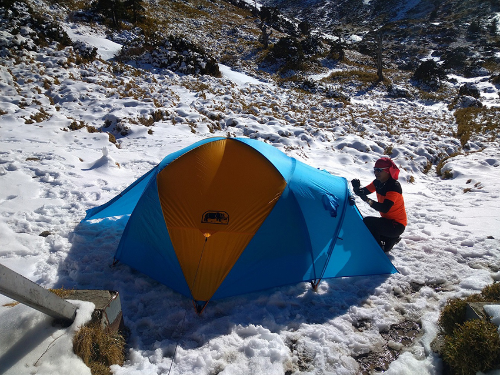

前言：
台灣因北回歸線貫穿，氣候介於熱帶與亞熱帶地帶之間，北回歸線以北為副熱帶季風氣候，以南為熱帶季風氣候，因此要在台灣冬天碰到下雪，需配合寒流來襲，以及所帶來的水氣跟相對高海拔的地區，才有機會看到大面積雪，而今天要來跟大家分享有帝王之山之稱南湖大山雪季壯闊美景。
第一天：雲稜山屋
寒流到來，最熱鬧的山不外乎是合歡山，人山人海塞爆了台灣公路最高點-武嶺，然而想要上山賞雪的我，避開這賞雪熱門景點，前往台7甲線50K處-勝光登山口，此次行程安排四天，同行隊友小郭，有雪地經驗跟受過一些相關訓練，協作朋友家文工作剛好在南湖山屋，所以行程時間有很大彈性，出發時間早上十一點，登山包重量裡頭除了個人及雪地裝備外，還有一頂犀牛四人帳，並且保溫袋裝滿肉，平均一下重量後，每人約負重17~18kg，不用自己當馱獸。
走到松楓嶺(海拔高度約2600公尺)大約下午二點，終於看到殘雪，大約四點半到達雲稜山屋，當天就我跟隊友包場，直接一人睡一整排床位，只能發揮我的特異功能....秒睡...ZZZ...zzz...倆人在比打呼聲，被吵醒的人就去外面看月亮尿尿。
| 松楓嶺殘雪 | ||
| 遍地水晶：殘雪經由白天陽光照射融化後，晚上又結凍成冰 | ||
| 雲稜山屋當晚主食： 飛魚卵香腸， 雞腿排， 骰子牛 | ||
第二天： 南湖山屋
原本第一天要殺到南湖山屋，被隊友阻止後，才能享受雲稜VIP包場，今天就是慢慢走行程，因為已經上了雪線，但是天氣很好，所以冰爪一直未上，沿途的一開闊處景色看到白色中央尖山，想到更早之前行程是安排四季上南湖北稜接北二段出清泉橋，由家文規劃，但他臨時工作來要上南湖山屋煮餐，所以此次重裝行程只到南湖山屋.
天氣冷，早上五點多起床，摸到七點才出發，九點來到審馬陣山，在途中還看到地上長出像冰的毛，持續走來到審馬陣大草原，遠處突然聽到直升機的聲音，而且後來從我們頭頂上飛過，跟隊友從地面上大動作的揮手打招呼，想說會不會飛低一點好拍更清楚，接著直升機飛到南湖西稜著名的飛機殘骸上空停留一下，看起來是在做飛行訓練，來到叉路指路牌看一下時間差不多十一點，輕裝上到南湖北山(蘭陽溪源頭)剛好可以看到雄偉的帝王之山-南湖主峰，回到叉路口後，接著而來的是這次行程的重頭戲五岩峰，附上影片供欣賞.
五岩峰往南湖圈谷影片
過了危險地型後來到南湖圈谷上方，冬天的景色實在令人著迷，而且冬天登山的人比較少，相對更有一種孤寂之美，往上頭一點的南湖北峰，往下俯視白雪皚皚的圈谷下方看到一間撒上糖霜的小屋，那就是今天的目的地，時間還早，索性就躺在雪地上玩起了雪，難得雪季上來，分享所拍如下：
| 地上長出毛： 此為凍拔現象，土壤內的水分因低溫結冰，冰的體積較大，因此從土壤中冒出 | ||
| 部份五岩峰地型：判斷路徑還是雪混合岩石，因雪厚度不夠，還未成冰，因此未上冰爪 | ||
| 南湖北峰：此座並非百岳，但位於南湖圈谷上方叉路木牌處不遠 | ||
| 顏色與自然景觀融合為一體 | ||
| 撒上薄薄的糖霜： 下方處小屋為南湖山屋 | ||
| 下切南湖圈谷： 影片聯結 | ||
 |
下切圈谷很快就抵達南湖山屋，裝備放著就開始著手這次雪訓，體驗野外雪地搭帳，先到山屋後面處理帶上來的肉，用天然冰箱冰著.然後開始著手搭帳，位置方便性及避風考量，直接選在山屋前的一塊空地，先整地把雪踏實，跟一般季節搭帳有差異於雪地太軟營釘無法固定，加上雪如果太厚，連我們平常會綁在大石頭都找不到，搭好帳要用雪把周圍風會灌進來的封好，並周圍挖一條溝，當再次下大雪時，帳上的雪可順勢滑至溝內，避免壓迫帳篷導致帳內反潮或雪太重壓壞帳篷，但如果暴風雪時，情況會不一樣，更多細節可參考雪地搭帳技巧
| 自製天然冰箱： 假裝成雪人... | ||
 |
||
| 楊過，今晚要睡冰床修練： 協作家文不太理我跟小郭，晚上還是窩在溫暖的山屋 | ||
|  |
第三天： 雪季南湖山屋直上-帝王之山
昨晚鋪了泰維特地布/充氣睡墊/露宿袋/睡袋(Comfort zone 2.3C; Lower Limit zone -3.2C; Extreme Zone -19.8C)，半夜還是很冷，月光照在雪地的反射都不用頭燈.早上摸了許久八點後才出發，但此次不走傳統路徑上南湖主峰，而是藉由積雪直接上切後，順著的山勢上攀，於九點十七到達主峰....哇哇哇...好美的景色!
選了積雪夠厚，有點坡度的地方開始練習滑落制動，並附上相關影片聯結：上坡影片; 下坡影片; 滑落制動練習
| 南湖主峰合照：協作家文與我 | ||
| 南湖主峰合照：小郭與我 | ||
| 當天超級好天氣：遠處看到大小壩以及雪山山系 | ||
| 直升機又來了，後來有模擬要降落南湖山屋 | ||
| 下山前合影 | ||
第四天：下山
南湖大山依舊雄偉，但昨天晚上不太平靜，有一組登山隊前往馬比杉山，因昨天我們南湖主峰下來就把帳收了，躲進山屋，因此知道這隊伍在天還沒亮就出發，但是晚上七點多還沒有回到山屋，而這整隊幾乎都穿雨鞋，領隊還很自信滿滿的說有只要有雨鞋好，連中央尖山都上的去，時間越來越晚，然後我們就始擔心了，家文等到八點多說要上去南湖東峰用無線電聯絡看看有沒有回應，還好天氣穩定，那隊人員的頭燈陸陸續續的出現在山屋後方的陡坡上，心裡的大石頭放了下來，只能說雪季上馬比杉山，還只穿雨鞋，個人感覺是帶去玩命.
早上六點準時出發返回登山口，雖然揹負有輕一點，但上圈谷也是要很認真的走，六點半上到圈谷上方，剛好看日出，美呀!又是一大片雲海...由制高點往下沿至五岩峰，等等要開外掛認真走了，想早點下山避開車潮，七點三十幾分來到審馬陣大草原，往遠處延伸，竟然可以看到好遠好遠的雪山主峰還積著雪，並且是根據照片最右邊的大小霸判別出來，從金黃色大草原切西瓜般的經過來到審馬陣山叉路，又順順的走於九點半回到第一天住的雲稜山屋，小休一下持續走，中途有切進來跟多加屯山三角點合照，十二點三十八下到710林道，在下來前的樹木葉子顏色，吸引了我的眼球，接著要做的事就是讓景色佔據我GoPro記憶卡，也好順便緩調整合我的氣息...回到勝光山(目前三角點己不見，不知道被誰抱回家)，終於在下午二點多回到菜園完美結束這一段南湖雪季之旅
| 變葉木烏臼：爬一座山同時可看到雪景，又有秋天樹葉變色的漂亮 |
行程記錄：
第一天 (重裝， 5小時27分)
11：00 勝光派出所>> 11：56勝光山>> 12：09思源&勝光登山口叉路>> 12：47太魯閣國家公園6.8K木樁>>14：03 松楓嶺8K木樁>> 14：34多加屯避難小屋>> 16：08木桿鞍部>> 16：27雲稜山屋莊.
PS.晚上雲稜山莊包場
第二天 (重裝， 6小時43分)
6：17 出發>> 08：00 木樁14K>> 08：43審馬陣山木牌叉路>>09：00審馬陣山>> 09：30審馬陣山屋木牌叉路>> 09：58木樁17K
10：25木樁18K>> 10：48南湖北山叉路口>> 11：03南湖北山>> 12：22過完五岩峰於南湖上圈谷>> 12：28南湖北峰1>> 2：32 開始下圈谷>> 13：00南湖山屋
PS.於南湖山屋前，練習雪地搭帳及晚上體驗宿雪地.
第三天 (輕裝， 3小時10分)
08：06 出發南湖大山>> 09：17南湖大山 >> 10：22斜坡處雪訓滑落制動>> 11：16回南湖山屋
PS.從南湖山屋， 直上南湖大山(未走傳統主東/主南叉路上南湖主峰)
第四天 (重裝， 8小時11分)
06：06 出發>> 06：33爬上南湖圈谷>> 07：22南湖北山叉路口>> 07：52審馬陣山屋木牌叉路
08：19 審馬陣山木牌叉路>> 09：17舊雲稜水源木牌>> 09：25雲稜山屋>> 10：08木桿鞍部
11：12 多加屯登山口>> 11：13多加屯山>> 12：38 回林道太魯閣國家公園6.8K木樁
13：33 思源&勝光登山口叉路>> 13：38勝光山>> 14：17回到勝光菜園
分享心得：
台灣雪季能爬的高山有限，之前政府透過雪季封山的理由去限制山友上山，因此在台灣能看到雪的地方總是擠滿了人，近幾年山岳政策慢慢開放因此冬天上山應該很有機會申請通過，但由於台灣緯度並非能讓高山終年有雪，所以雪地裝備/訓練/熟悉度都要刻意去購買或學習，簡單來說，沒這環境因很難推廣普及雪地技能，當大家一窩蜂去申請雪季高山，風險程度就會拉高，雪季上山需要很謹慎評估及準備，別跟山過不去，不要像那些穿雨鞋的山友們，在室外行走十八小時，應該會是永生難忘刻苦銘心的經驗，山永遠都在，但安全是親近山林的最優先考量。